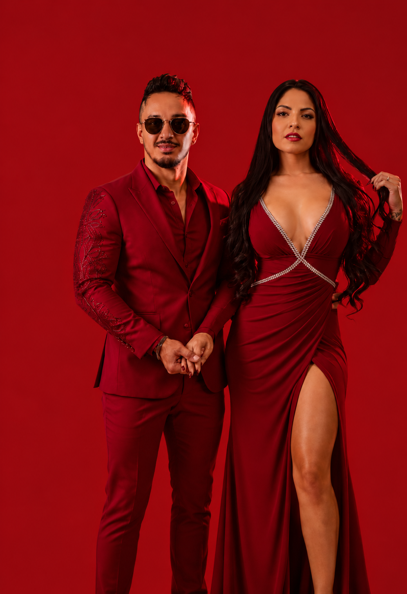
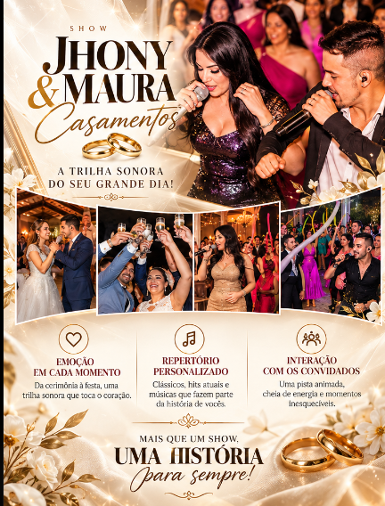
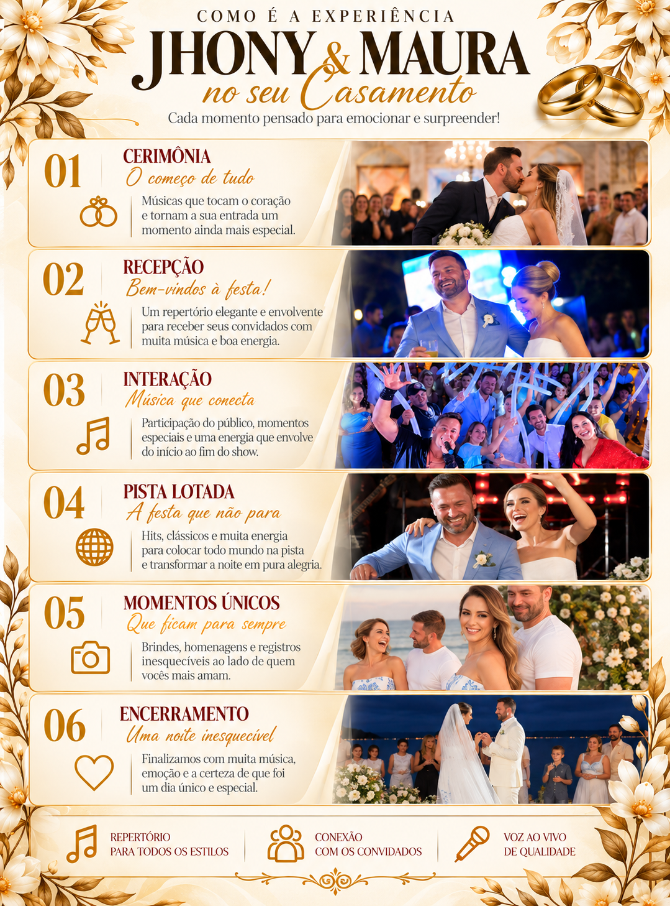

Cerimônia emocionante
Canções escolhidas para acompanhar a entrada e os momentos mais marcantes do “sim”.
CASAMENTO · UMA HISTÓRIA · UMO SIM
Uma celebração com a sua personalidade, uma pista cheia de energia e momentos que vão ficar na memória para sempre.
PLANEJAR MEU CASAMENTO ↗
A TRILHA SONORA DA SUA HISTÓRIA
Música ao vivo, presença de palco e um repertório que acompanha cada capítulo da celebração — da emoção dos primeiros momentos à energia de uma pista cheia.
Repertório alinhado ao estilo dos noivos e dos convidados.
Presença de palco para aproximar e envolver quem vocês amam.
Uma celebração autêntica, emocionante e cheia de vida.
CADA CAPÍTULO MERECE UMA TRILHA
Uma celebração construída em torno dos noivos, com música, emoção e espaço para todo mundo fazer parte.


Canções escolhidas para acompanhar a entrada e os momentos mais marcantes do “sim”.
A música certa para tornar a chegada dos noivos ainda mais especial.
Trilhas que acompanham votos, homenagens e abraços de quem faz parte da história.
Interação natural, presença de palco e espaço para os convidados celebrarem junto.
Um repertório versátil para reunir gerações e manter a pista cheia de alegria.
Uma noite cheia de momentos compartilhados — e histórias que continuam depois da última música.
A PRÓXIMA HISTÓRIA É A DE VOCÊS
Conversem com Jhony & Maura e planejem a trilha sonora do grande dia.
CONVERSAR COM A DUPLA ↗